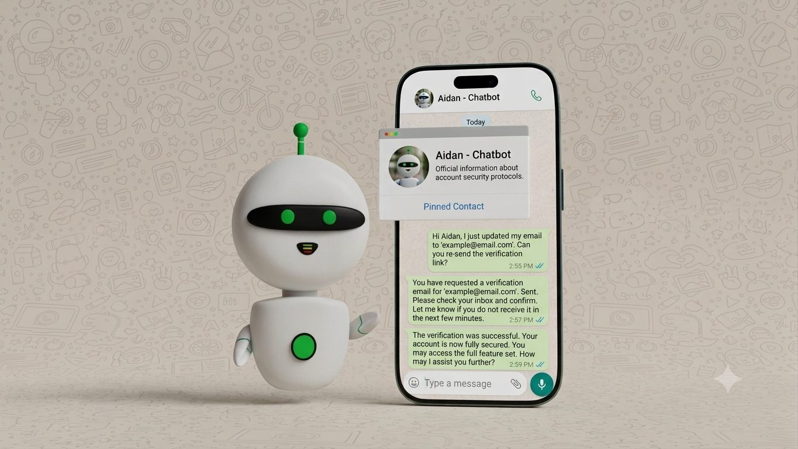
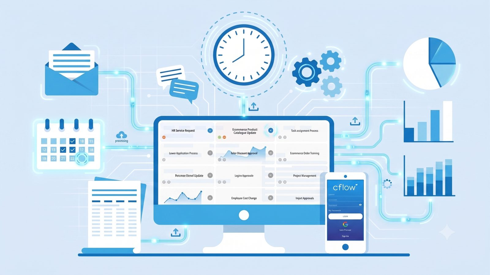
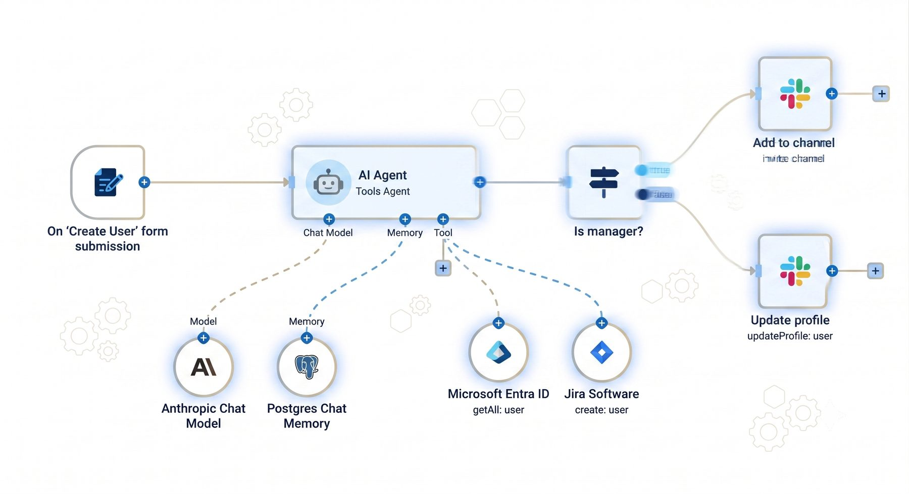
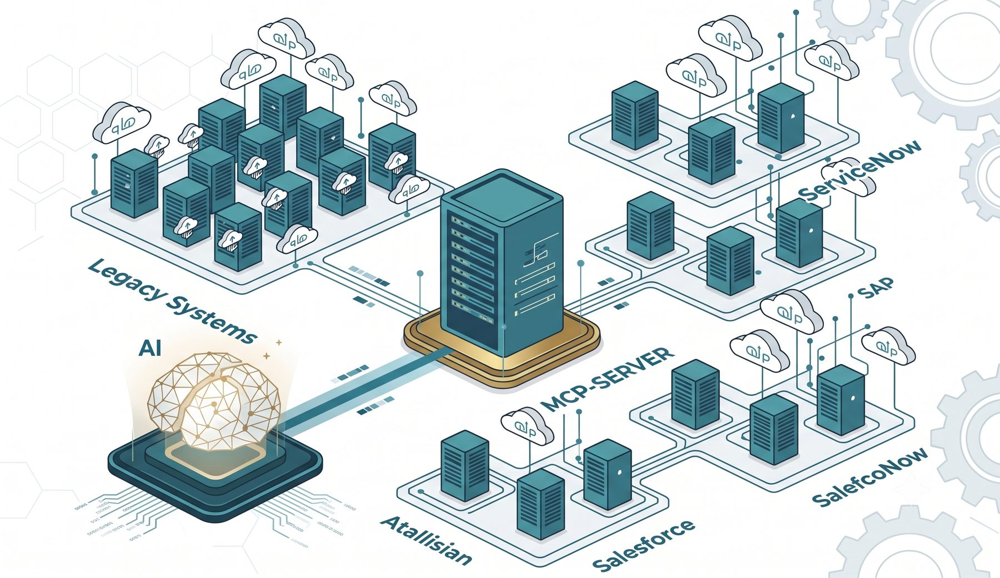
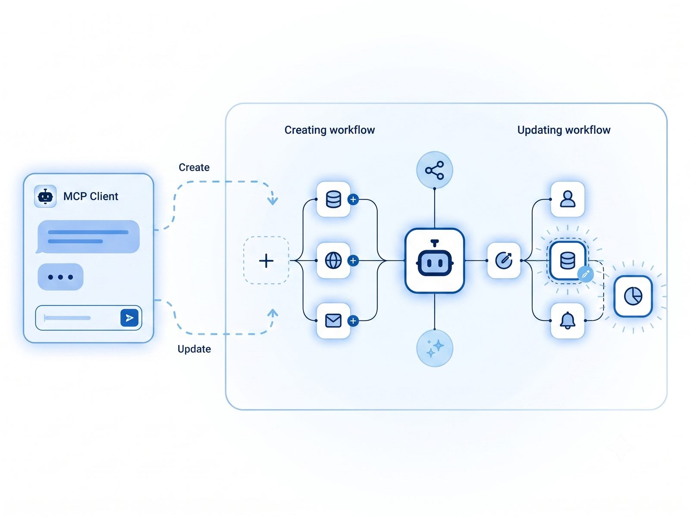
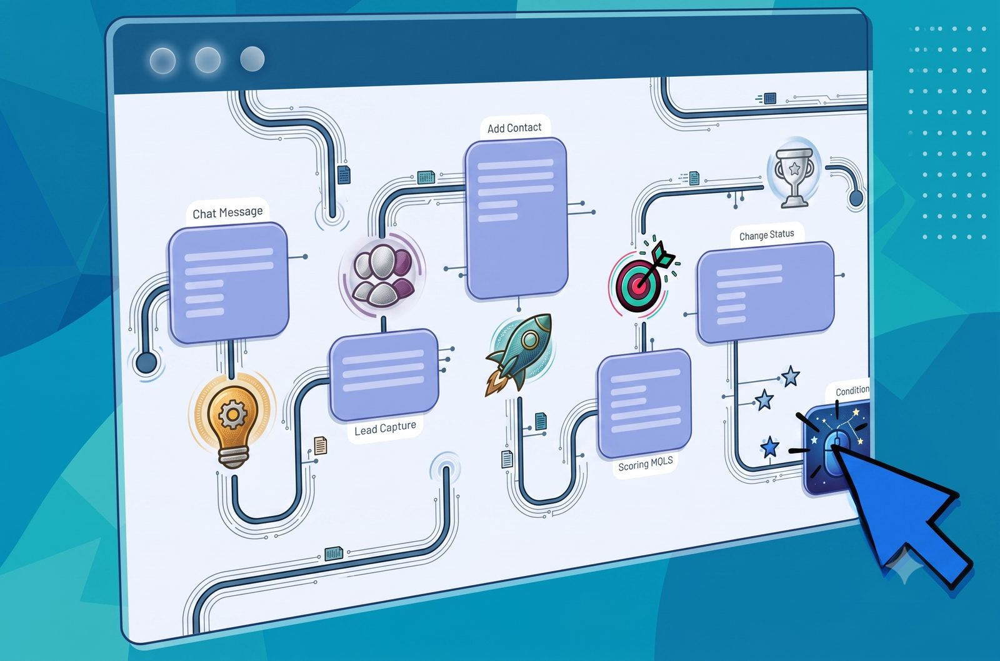
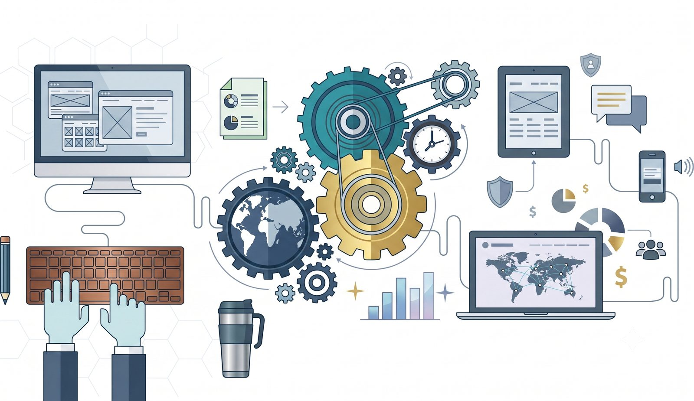

N Automations designs AI agents, business process automation, and n8n / MCP-driven workflows that connect your tools, cut manual work, and scale with you — end to end.
From conversational AI agents to full workflow orchestration, we design systems that plug straight into how your team already works.

Custom AI agents that handle support, sales, and internal requests across chat, WhatsApp, voice, and web — trained on your data, on brand, always on.
See it in action
We map your operations — approvals, onboarding, reporting, invoicing — and automate the repetitive middle so your team focuses on decisions, not data entry.
See it in action
n8n and MCP-server pipelines that connect your CRM, database, and SaaS stack into a single self-running workflow — triggers, logic, and actions built to spec.
See it in actionEvery N Automations agent is wired directly into your tools: it can look up an order, escalate a ticket, update a record, or send a WhatsApp confirmation — no human hand-off required.
From a first "hi" on WhatsApp to a resolved account issue, our agents carry context across the whole conversation — and know exactly when to bring a human in.
We rebuild your reporting, approvals, and back-office processes as automated pipelines with real-time dashboards — so leadership sees what's happening, instantly.
Every engagement starts with the data: where time is lost, which processes leak money, and which automation pays back fastest — so you invest in the right build first.
We design and ship workflow graphs that link your AI agents to real systems: CRMs, databases, ticketing tools, and legacy software — orchestrated through an MCP server.

Our MCP-server layer gives your AI agent a controlled, secure bridge into Salesforce, SAP, ServiceNow, Atlassian, and your own legacy systems — no brittle point-to-point integrations.
Every automation starts as a visual workflow graph — trigger, agent, logic, action — before it ever touches production.



We map your current process, tools, and bottlenecks in a short working session.
We architect the agent or workflow — triggers, logic, integrations — and review it with you.
We build and test in n8n / MCP against real data before anything touches production.
We deploy, monitor, and iterate — with ongoing support as your systems evolve.
N Automations exists for one reason: teams spend too much time on work that a well-built agent or workflow could handle instead. We combine AI agent design, process automation, and n8n / MCP engineering into one build — so you get a system that thinks, connects, and acts, not just a chatbot bolted onto your website.
Whether you're a founder drowning in manual ops or an enterprise team standardizing dozens of workflows, we scope, build, and support the automation — end to end.
Most single-agent projects ship in 2–3 weeks. Multi-agent or full workflow builds typically take 4–8 weeks depending on the number of integrations involved.
Yes — we build on n8n and an MCP-server layer specifically so we can connect to CRMs, ticketing systems, databases, and legacy software you already run, rather than asking you to switch platforms.
Every package includes a support window post-launch. After that, we offer ongoing maintenance and optimization retainers as your workflows evolve.
Yes — agents are grounded in your knowledge base, policies, and tone of voice, and only take actions you explicitly approve during the design phase.
Tell us about the process, task, or channel eating your team's time — we'll come back with how we'd automate it.
Follow along